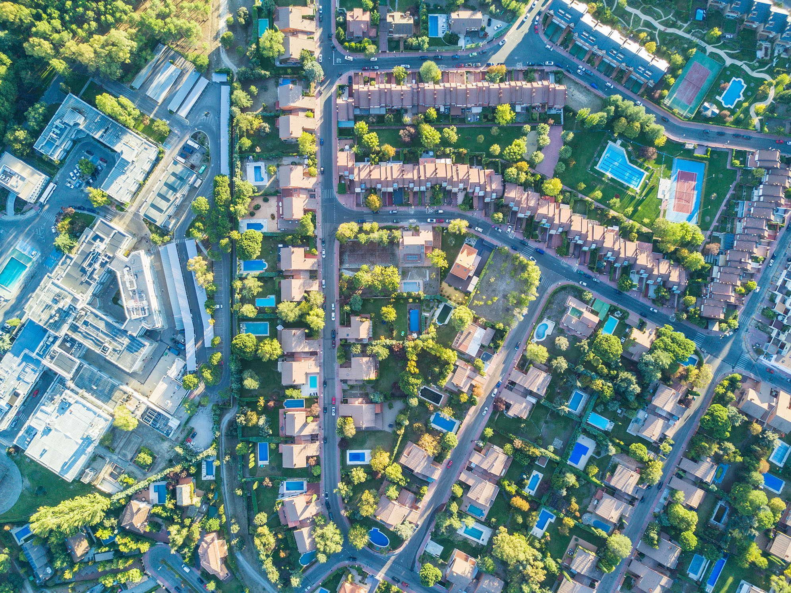
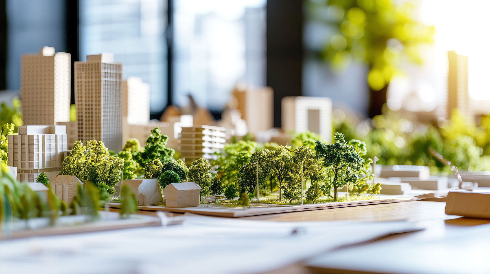
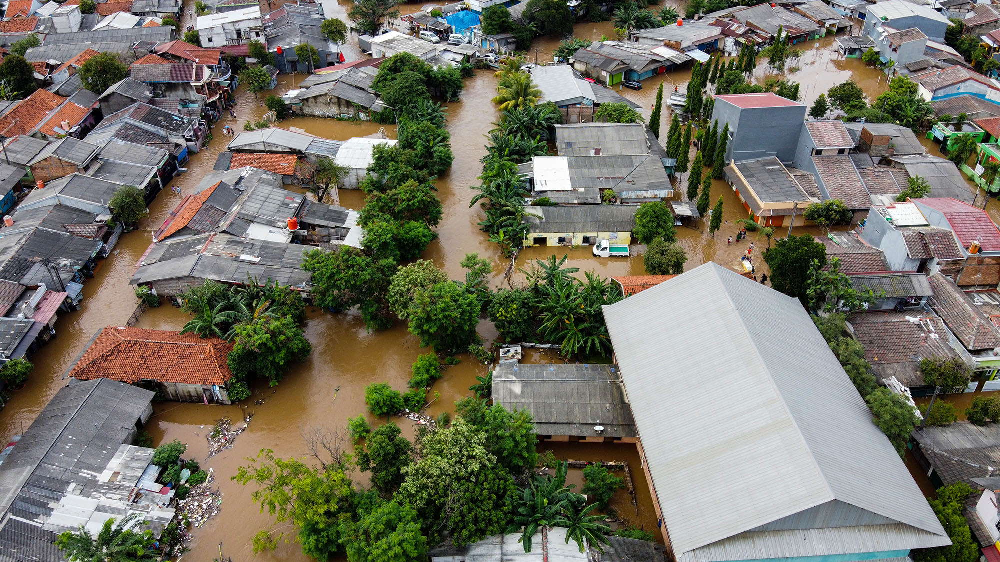

What We Study
Our lab uses GIS and spatial modeling to measure geographic context, land use patterns, and environmental conditions across four core domains.

Built Environment
With rapid urbanization occurring worldwide, we address challenges with urban forms and structures that affect human well-being. The quality and design of the built environment can also exacerbate or mitigate social problems in the neighborhood and are important for promoting a more inclusive and equitable environment.
Urban form and structures · Urban vacancies · Walkable environment

Green Infrastructure
Green infrastructure includes diverse natural resources that could serve as an infrastructure in urban areas. We seek the benefits green infrastructure can bring and find spatial patterns linked to the socioeconomic characteristics of the neighborhoods from the perspective of environmental justice.
Tree canopy · Green spaces and parks · Low-impact development

Climate Adaptation
As the world's climate shifts in increasingly unpredictable ways, human adaptation to the environment and risk reduction are crucial. We analyze the current built environment and green infrastructure to recommend tools for climate adaptation.
Extreme weather events (heat, flooding, etc.) · Disaster mitigation, preparedness

Social Vulnerability
Socially vulnerable communities face compounding challenges from environmental, economic, and physical conditions. We identify spatial patterns and develop policy recommendations that enhance quality of life, with a focus on environmental justice and equitable community development.
Environmental justice · Neighborhood change · Gentrification · Community wellbeing